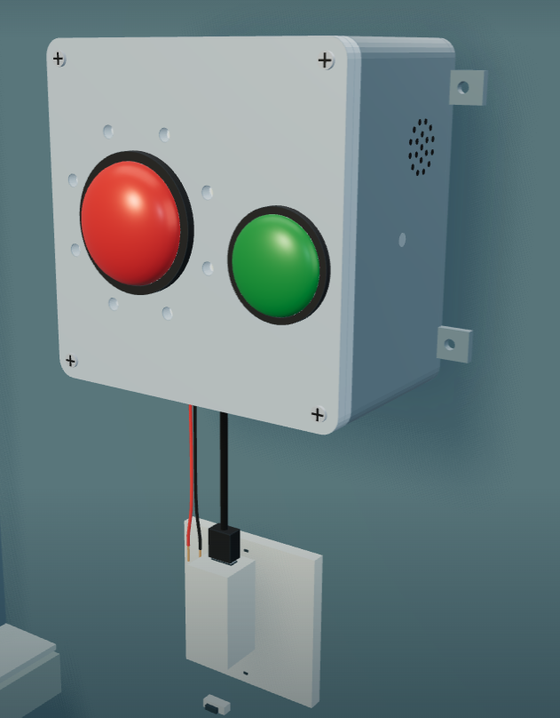
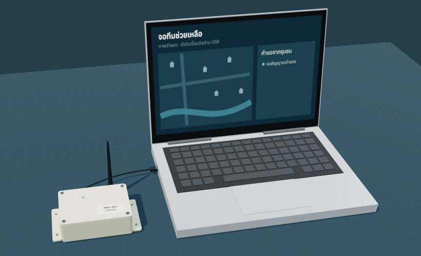

กล่องติดบ้านที่คุยกับทีมช่วยเหลือได้สองทาง
ไม่ต้องใช้เน็ต ไม่ต้องใช้มือถือ ใช้ได้แม้ไฟดับ เสามือถือล่ม
ในวันที่ทุกอย่างล่ม
คนที่เปราะบางที่สุด ต้องเป็นคนแรกที่ถูกได้ยิน
162 คนเสียชีวิตในน้ำท่วมภาคใต้ พ.ย. 2568 ชาวบ้านหลายบ้านบอกว่าไม่มีใครมาเลย 3–4 วัน
ที่มา: Thai PBS1 ใน 3ของผู้สูงอายุไทยไม่ใช้อินเทอร์เน็ต ข้อความเตือนในมือถือจึงไปไม่ถึง
ที่มา: สำนักงานสถิติแห่งชาติ (ใช้ 67.3%)ไม่มีเสียงผู้สูงอายุที่ไม่มีมือถือหายไปจากแผนที่ขอความช่วยเหลือ เตือนแล้วก็ไม่รู้ว่าใครได้ยิน
ที่มา: กรุงเทพธุรกิจ
1 2 3 4มุมมอง ก — กล่องบ้าน ติดผนังชั้นบน (ภาพจำลอง 3 มิติ แบบกล่องจริงรุ่นถัดไป)
กล่องแจ้งเตือน คนในบ้านกดตอบรับ ทีมรู้ทันทีว่าบ้านไหนยังเงียบ ต้องไปเคาะประตู
ส้ม = เตือน → เขียว = ได้ยินแล้วกดปุ่มเดียว ทีมเห็นทันทีว่าบ้านไหน ใครอยู่ เมื่อทีมรับเรื่อง กล่องบอกคนในบ้านว่า "ทีมกำลังมา อย่าลงน้ำ"
แดง = ขอช่วย → เหลือง = รับเรื่องแล้วบ้านผู้ป่วยติดเตียงมีสายวัดน้ำ ถ้าน้ำเข้าบ้านแล้วไม่มีใครกด กล่องขอความช่วยเหลือให้เอง อสม. ยืนยันก่อนส่งเรือ
แดง = กล่องขอแทน| 1 | แหวนไฟ 12 ดวง — บอกสถานะด้วยสี |
| 2 | ปุ่มแดง — กดค้าง 2 วิ = ขอความช่วยเหลือ |
| 3 | ปุ่มเขียว — กด = ได้ยินแล้ว · กดค้าง = ปลอดภัย |
| 4 | ลำโพง — บอกคนในบ้านว่าเกิดอะไรขึ้น |
ไม่ได้รอแค่วันน้ำท่วม
ล้มในบ้าน กดปุ่มเดียว ทีมเห็นบ้านเลขที่ทันที
ไม่ต้องพูด ไม่ต้องโทร — ข้อมูลบ้านและคนในบ้านลงทะเบียนไว้ตอน อสม. ติดตั้ง
เหมือนถังดับเพลิง: ติดไว้ทั้งปี วันที่ต้องใช้ ต้องใช้ได้

มุมมอง ข — ตัวรับที่ อบต. ต่อโน้ตบุ๊กด้วยสาย USB · จอทีมช่วยเหลือ
| อบต. / เทศบาล | ลูกค้าหลัก ติดบ้านเปราะบางที่ อสม. ดูแลอยู่แล้ว ใช้ได้ทั้งปี |
| ครอบครัว | มีพ่อแม่สูงอายุอยู่บ้านคนเดียว |
| ศูนย์ดูแลผู้สูงอายุ | บ้านพักคนชรา เนอร์สซิ่งโฮม ปุ่มขอช่วยที่ใช้ได้แม้ไฟดับ |
| มูลนิธิ / หน่วยกู้ภัย | ตั้งตัวรับเป็นจุดรับเรื่องของตัวเองในพื้นที่ |
| บริษัทประกัน · ผู้ดูแลผู้สูงอายุ | แพ็กเกจปุ่มฉุกเฉินในบ้านให้ลูกค้า |
| ที่พัก · โรงเรียน | รีสอร์ต หอพัก ห้องพยาบาล ชุมชนบนดอย ที่สัญญาณไม่แน่นอน |
| ราคาขายกล่องบ้าน | ≈ 1,445 บาท ต้นทุน ≈ 850 |
| ราคาขายตัวรับ | ≈ 850 บาท ต้นทุน ≈ 500 |
| วิทยุ | 923.2 MHz · 14 dBm |
| โปรแกรม | ผ่าน 52/52 กรณี จำลองบนคอม |
| ทดสอบกล่องจริง | 8–9 พ.ย. 2569 |
| นำร่อง | ประสาน อบต. หลังทดสอบผ่าน |